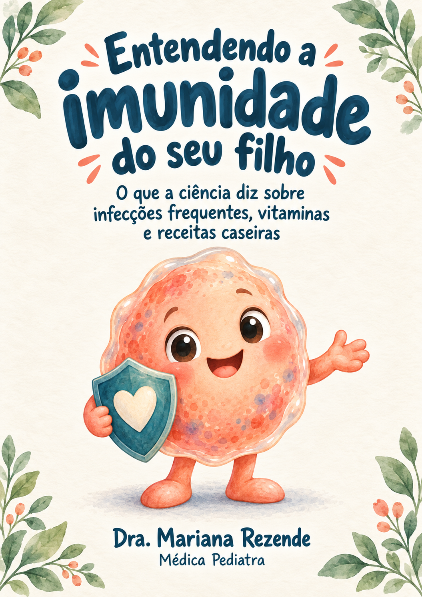
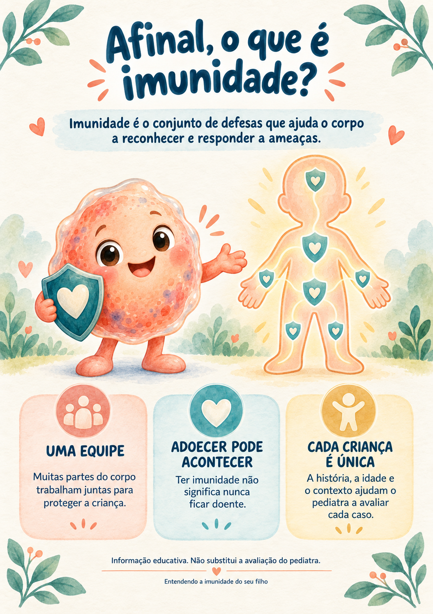
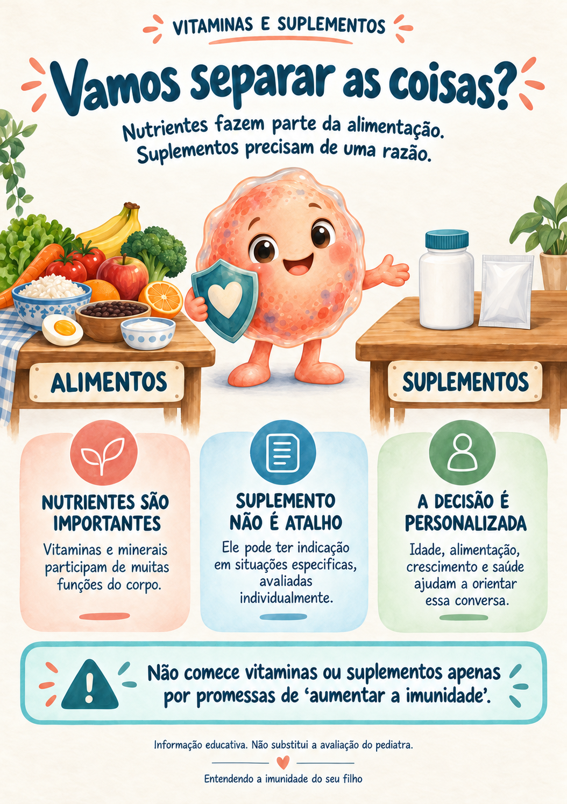
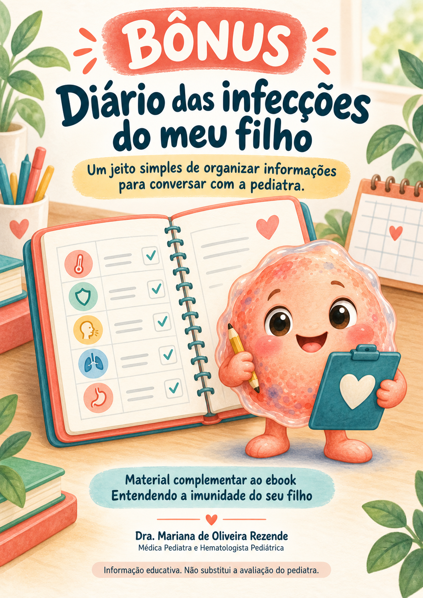

“Será que a imunidade está baixa?”
Quando os episódios parecem se repetir, essa dúvida costuma surgir.
Você já não sabe se é imunidade baixa ou uma fase da idade?
Entenda o que a ciência diz sobre infecções frequentes, vitaminas, suplementos e receitas caseiras — com linguagem simples e sem promessas milagrosas.

Informação claraUm guia para separar informação confiável de mitos e organizar dúvidas para a consulta.


É comum se perguntar se uma criança está adoecendo mais do que deveria. No meio de tantas opiniões, pode ser difícil saber o que é esperado na infância, o que merece atenção e em quem confiar.
Quando os episódios parecem se repetir, essa dúvida costuma surgir.
Promessas de proteção podem gerar mais confusão do que clareza.
Mesmo quando algo pode ser esperado, dúvidas merecem espaço.
Receitas e opiniões diferentes tornam a rotina mais insegura.
O ebook não substitui a avaliação individualizada, mas ajuda a transformar dúvidas soltas em uma conversa mais clara com o pediatra.
Defesas do corpo, sem complicação.
O que observar com calma.
Sono, alimentação e vacinas.
Mais não é mais proteção.
Conforto não é cura.
Respostas responsáveis.
O Escudinho torna as explicações mais próximas das famílias, enquanto os textos reforçam os limites da informação educativa.
Entender por que infecções frequentes nem sempre significam imunidade baixa.
Diferenciar cuidados de conforto de promessas de cura.
Organizar sintomas, informações e perguntas importantes.

2 BÔNUSDiário das infecções do meu filho
Para registrar episódios e organizar a conversa na consulta.
Plano de cuidado em dias de resfriado
Hidratação, descanso, conforto e sinais para procurar orientação.
“Meu filho pegou 4 resfriados em 2 meses desde que entrou na creche, ficava sem saber o que fazer. O guia me ajudou a ter mais noção de quando assistência.”
“Tinha a impressão que meu filho fica doente mais que os coleguinhas dele. Pensava que dando alguma vitamina, ele teria mais proteção. O guia me ajudou a entender mais sobre o assunto.”
“Gostei tanto do guia que agendei uma consulta online com a Dra Mariana. Ela é super atenciosa, paciente, explica tudo muito direitinho. Acalmou meu coração.”
“Estamos com bebê de 2 meses. Compramos o guia pra ganhar mais conhecimento sobre o assunto. Saímos bem mais instruídos, e conseguimos conversar melhor com a pediatra.”
Você receberá o ebook completo em formato digital, com acesso organizado pela Hotmart.
Pagamento via PIX ou cartão
Quero receber o ebookCheckout seguro · Acesso digital pela HotmartGarantia de 7 dias
Solicite o reembolso dentro do prazo informado na compra.
Para pais, mães e cuidadores que desejam compreender melhor dúvidas comuns sobre imunidade infantil e se preparar para conversar com mais clareza com o pediatra.
Ele explica conceitos gerais sobre infecções frequentes, imunidade e cuidados da rotina. Não faz diagnóstico, mas ajuda a organizar informações e dúvidas importantes para a consulta.
Não. Ele é um material educativo. Seu propósito é complementar o cuidado, ajudando famílias a entender melhor o tema e a aproveitar a conversa com o pediatra.
Após a confirmação do pagamento, a Hotmart enviará as orientações ao e-mail informado.
Sim. O ebook e os bônus são digitais e podem ser acessados em celular, tablet ou computador.
O ebook principal e os dois bônus práticos descritos nesta página.
Sim. A oferta possui prazo de garantia de 7 dias, conforme as condições informadas no checkout da Hotmart.